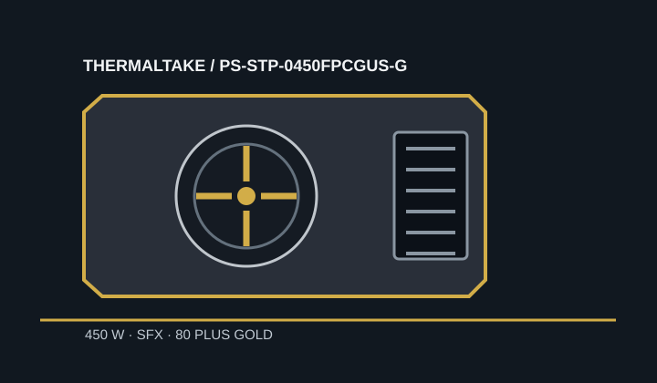

[ POWER CONVERSION // IDENTIFIED MODEL ]
Thermaltake Toughpower SFX 450W Gold
US model code PS-STP-0450FPCGUS-G. Related regional codes use the FPCGXX form; retain the full suffix on the label when matching the product.

HIGH-VOLTAGE SAFETY: Never open or probe a PSU; hazardous charge may remain after unplugging.
Verified model specifications
| Model / rated output | Toughpower SFX 450W Gold, US part number PS-STP-0450FPCGUS-G; 450 W. |
|---|---|
| Form factor / dimensions | SFX; 100 × 125 × 63.5 mm (length × width × height). Manufacturer includes SFX-to-ATX mounting hardware. |
| DC output rails | +3.3 V: 15 A; +5 V: 15 A; combined +3.3 V/+5 V: 82.5 W; +12 V: 37.5 A / 450 W; −12 V: 0.3 A / 3.6 W; +5 VSB: 2.5 A / 12.5 W. |
| Efficiency claim | 80 PLUS Gold, stated by Thermaltake. |
| Cable-end connector counts | Fully modular: 24-pin motherboard ×1; CPU 4+4-pin ×1; PCIe 6+2-pin ×2; SATA ×3; Molex ×2; floppy adapter ×1. |
| Revision and cable cautions | Match the US `FPCGUS-G` suffix or the exact regional `FPCGXX-G` code and nameplate. Use only the cables supplied with, or approved for, this exact model/revision; PSU-side pinouts are not standardized. |
Compatibility & safe installation
- Confirm the 100 mm SFX length and ATX bracket mounting in the target chassis; check ventilation and modular plug bend clearance.
- Assess GPU requirements against the two PCIe 6+2-pin ends, 450 W total and 37.5 A +12 V rail. Do not infer support for a GPU requiring more or different connections.
- Use the correct regional mains lead and exact cable set. Similar Thermaltake modular plugs do not prove cable interchangeability.
- Never open, probe or repair the PSU.
Manufacturer sources
- Thermaltake Toughpower SFX 450W GoldManufacturer product identity, certification and feature overview.
- Thermaltake USA regional product listingManufacturer regional SKU, dimensions, output specifications and cable/connector information.